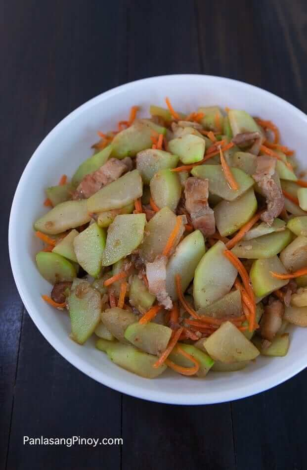

Sayote

Tasty Ginisang Sayote is not just your ordinary sautéed chayote.
This dish holds up to its name. It is full of flavor and simply delicious.
Ginisang Sayote is a Filipino vegetable dish.
Chayote and vegetables such as carrots are sauteed with protein (usually pork). It is a simple dish that can be prepared for either lunch or dinner.
It is best eaten as a main dish with rice. It can also be paired with other fried dishes.
Ingredients
- 3 pieces sayote
- 16 g sachet Knorr Pork SavorRich Pork Liquid Seasoning
- 1 piece carrot sliced into strips
- 5 ounces pork belly sliced into thin pieces
- 1 piece onion chopped
- 5 cloves garlic crushed and minced
- 1 3/4 cups water
- Ground black pepper to taste
Steps
- Heat a cooking pot. Sear pork until brown and oil is extracted.
- Add onion and garlic. Saute until onion softens.
- Pour 1 ½ cups water. Let boil. Cover the pot and continue to boil in low heat until liquid completely evaporates.
- Add chayote and saute for 2 to 3 minutes.
- Add carrots. Saute for 2 minutes.
- Pour Knorr Pork SavorRich Liquid Seasoning. Stir.
- Add ground black pepper (optional). Pour ¼ cup water. Cover the pot. Cook for 1 minute.
- Transfer to a serving plate. Serve!
- Share and enjoy!